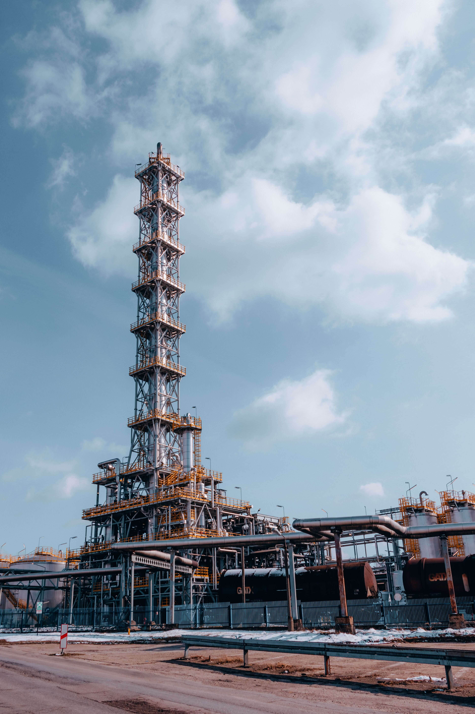
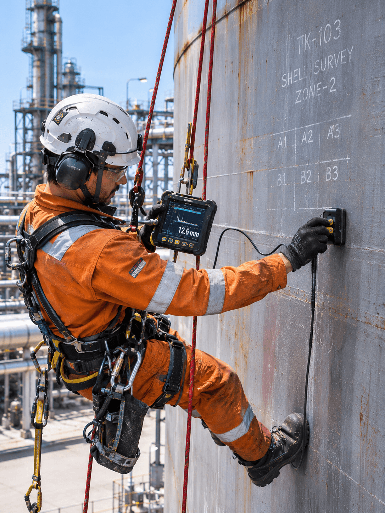

Certified inspectors
Level II and III personnel certified for every method we offer, delivering accurate inspections on critical assets.
ASNTPCNISO 9712
Certified NDT, QC inspection, railway work and manpower supply for refineries, pipelines, process plants and heavy industry.
Level II and III personnel certified for every method we offer, delivering accurate inspections on critical assets.
Procedures aligned to international codes, with traceable, audit-ready records of every finding.
Mobilised crews and mobile labs ready for turnarounds and emergency call-outs, with minimal downtime.


Pressure vessels, pipelines, storage tanks and offshore structures fail where flaws go unseen. We find them early, report them clearly and work shoulder to shoulder with plant owners, EPCs and contractors so operations stay running.
Inspection methods, railway work and manpower supply from one crew. We recommend the right technique for the defect, the material and your shutdown window.

Sound waves measure wall thickness and reveal internal flaws and corrosion mapping, without taking equipment out of service.
ASME V · API 510 / 570 / 653 · ISO 17640
Gamma, X-ray and digital radiography show volumetric weld defects such as porosity, slag and lack of fusion.
ASME V Art. 2 · ISO 17636
Magnetise the part, apply particles, and surface cracks light up. Wet fluorescent and dry methods for ferromagnetic steel.
ASTM E1444 · ISO 17638
Visible and fluorescent dye penetrant for surface-breaking defects on any non-porous material, including stainless and aluminium.
ASTM E165 · ISO 3452
Advanced ultrasonics with recorded, repeatable scans. Faster than film, no radiation exclusion zone, ideal for critical welds.
ISO 13588 · ISO 10863 · ASME V Art. 4
Inspection by rope-trained technicians on tank shells, stacks and flare booms, often with no scaffold build time or cost.
IRATA-trained teams
Rail welds, wheels, axles, bogies and workshop components checked with UT, MPI, LPT and visual methods.
RDSO and railway client specifications
Certified NDT technicians, QC and welding inspectors and rope access teams for shutdowns and projects.
ASNT, ISO 9712, CSWIP, IRATAFour steps from first call to signed-off report.
We review drawings, code and access, then issue a written procedure and inspection plan.
Crew, equipment and permits arrive ready. Toolbox talk and radiation barriers go up before work starts.
Daily progress is shared so you can repair or re-shoot while the shutdown clock is still running.
Traceable, signed reports with data and images, delivered in your format.
Wellhead to terminal: separators, gas plants, pipelines and storage.
Columns, heaters, exchangers and process piping, including shutdown scopes.
Boilers, turbines, headers and pressure parts in thermal and renewable plants.
Structures, shipyards, offshore units and pre-delivery weld acceptance.
Rail welds, wheels, axles, bogies and workshop components.
Classroom and hands-on training from working inspectors.
Mobilised crews for plant shutdowns, fabrication yards, railway workshops and offshore units, plus certified NDT manpower for international projects.
A sample of the work our crews have delivered.

Oil and gas · UT and RT on piping and exchangers during a planned shutdown.

PAUT on girth welds with recorded scans.

Rope access thickness survey, no scaffold.
“Tech NDT Services delivered accurate PAUT results inside our shutdown window. Professional crew and flawless reports.”Plant Maintenance Head, refinery client
“Their safety culture stood out. Zero incidents across a 45-day turnaround.”HSE Manager, EPC contractor
“Fast mobilisation and clear communication. Highly recommended for critical weld inspection.”Project Manager, fabrication yard
Tell us about your plant, method and timeline. An engineer replies within one working day.